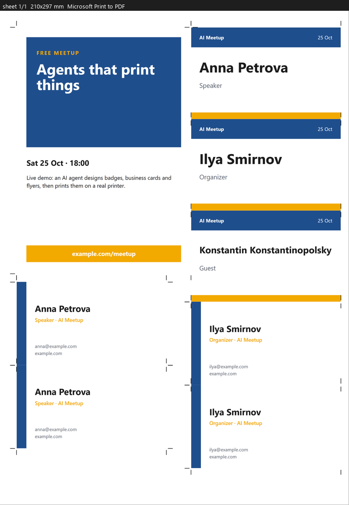
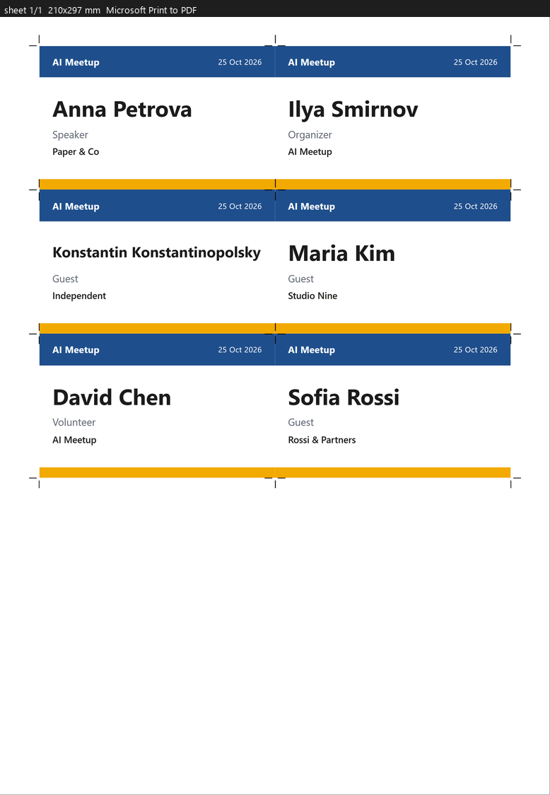
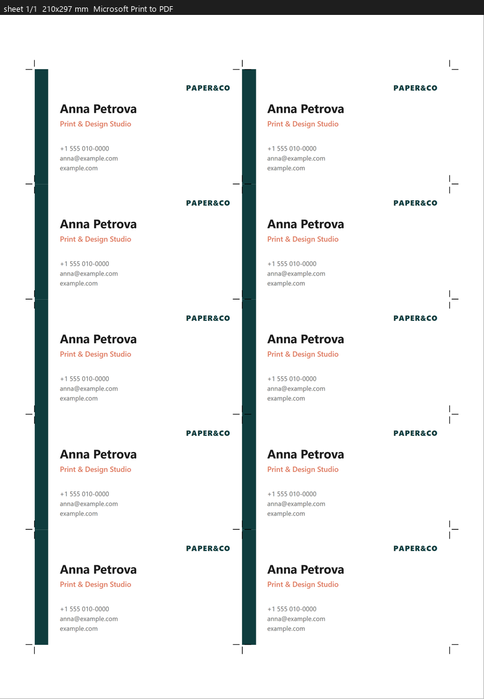

The print shop inside your AI agent
Your agent designs badges, business cards and flyers, shows you an exact proof and prints them on your real printer, millimetre-accurate. And it remembers every print profile.

Millimetre-accurate
Rendered straight to printer pixels. 1 mm in the design is 1 mm on paper, with no silent “fit to page”.
Remembers your profiles
Printer, paper, tray, media, quality, colour, calibration, even vendor-only driver options. Explain once.
Proof before print
The agent sees exactly what will print: unprintable margins, clipped names, blurry photos, wrong paper.
Mixed sheets
Badges, business cards and flyers packed together with crop marks. Less paper, fewer passes.
How it works
Profiles
The agent picks your saved printer setup, or saves a new one.
Design
HTML in millimetres, from ready-made templates.
Proof
An exact preview with every problem flagged.
Print & learn
Prints, asks how it came out, and fixes the profile for next time.
Why not just Ctrl+P?
| Ctrl+P | printshop-mcp |
|---|---|
| “Fit to page” silently scales: 90 mm becomes 88.7 mm | 1 mm in the design = 1 mm on paper |
| Content falls into the unprintable margin | The proof shows the real unprintable zone |
| The agent can’t see the result | Proof images and a report on every problem |
| Settings forgotten every time | Named profiles with the full driver state |
Templates included


Install
Claude Code
/plugin marketplace add ildargiv/printshop-mcp /plugin install printshop@printshop-mcp
Any MCP client
{ "mcpServers": { "printshop": {
"command": "uvx",
"args": ["--from",
"git+https://github.com/ildargiv/printshop-mcp",
"printshop-mcp"] } } }Needs uv and Edge or Chrome. Windows today; macOS and Linux are next.